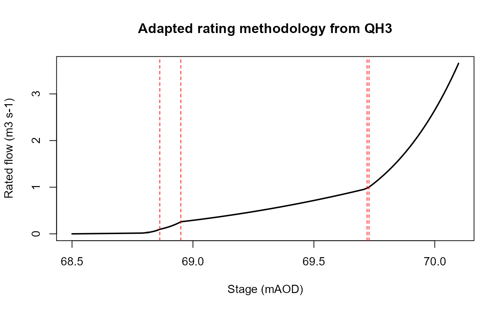

rateFlow.RdThe rateFlow function uses Q = A *(h-B)^C to convert stage data to flow
rateFlow(data, rating, start = 0)Stage data of interest
dataframe of rating equations
Sets an offset point from which ratings begfgin, set to 0
ratings <- data.frame(C = c(20.536, 10.077, 2.2243, 6.67),
A = c(2.032161, 0.432618, 0.290283, 0.026064),
B = c(68, 68, 68, 68),
# min = c(0, 0.352, 2.076, 3),
max = c(68.863, 68.950, 69.720, 69.728))
library(readr)
obs <- read_csv("C:/Users/jpayne05/Desktop/Datasets/Ratings/Example_rating_data.csv")
#> Rows: 323 Columns: 3
#> -- Column specification --------------------------------------------------------
#> Delimiter: ","
#> dbl (3): Stage, local stage, Flow
#>
#> i Use `spec()` to retrieve the full column specification for this data.
#> i Specify the column types or set `show_col_types = FALSE` to quiet this message.
test <- rateFlow(data = obs$Stage, rating = ratings)
plot(test$flow~test$stage,
type = 'l',
xlab = 'Stage (mAOD)',
ylab = 'Rated flow (m3 s-1)',
main = 'Adapted rating methodology from QH3',
lwd = 2)
for(i in seq_along(ratings$max)){
abline(v = ratings$max[i],
lty = 2,
col = 'red')
}
